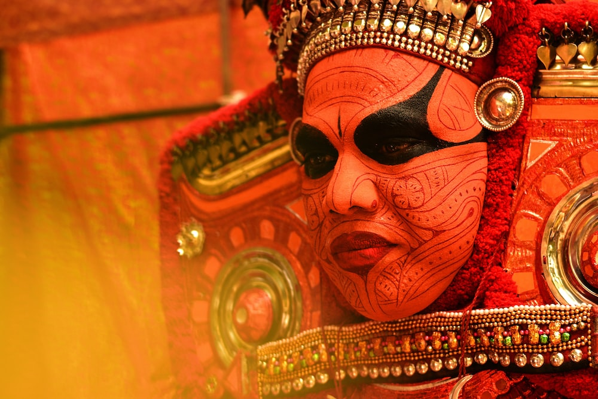
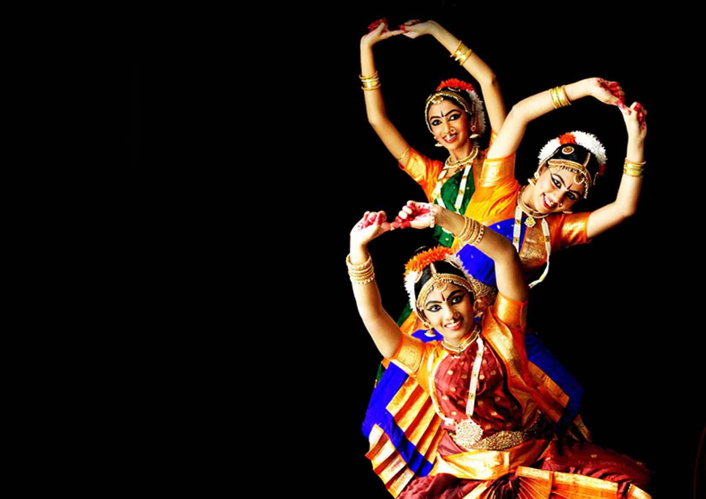

KALARIPAYATTU
Kalaripayattu is an Indian martial art that originated in modern-day Kerala, a state on the southwestern coast of India

THEYYAM
Theyyam is a famous ritual art form that originated in North Kerala which brings to life the great stories of our State

KUCHIPUDI
Kuchipudi is one of the eight major Indian classical dances. It originates from a village named Kuchipudi in the Indian state of Andhra Pradesh.